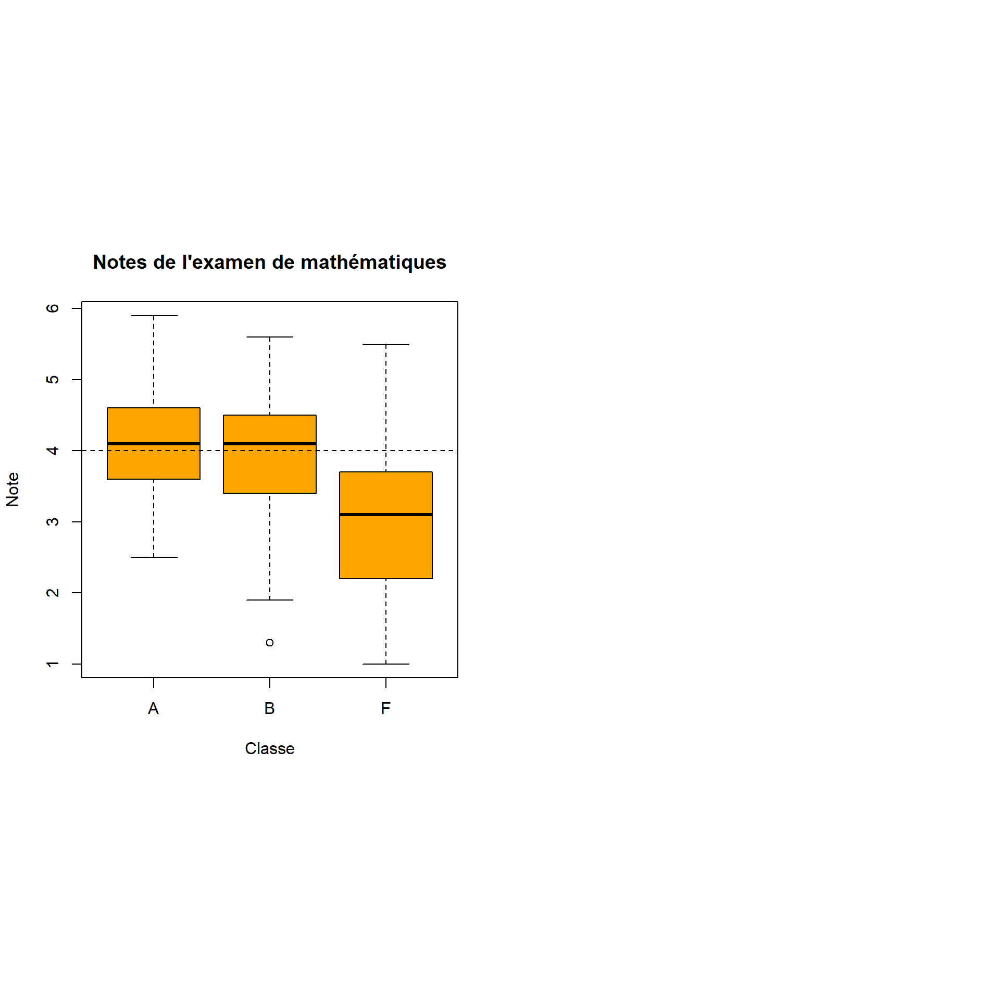
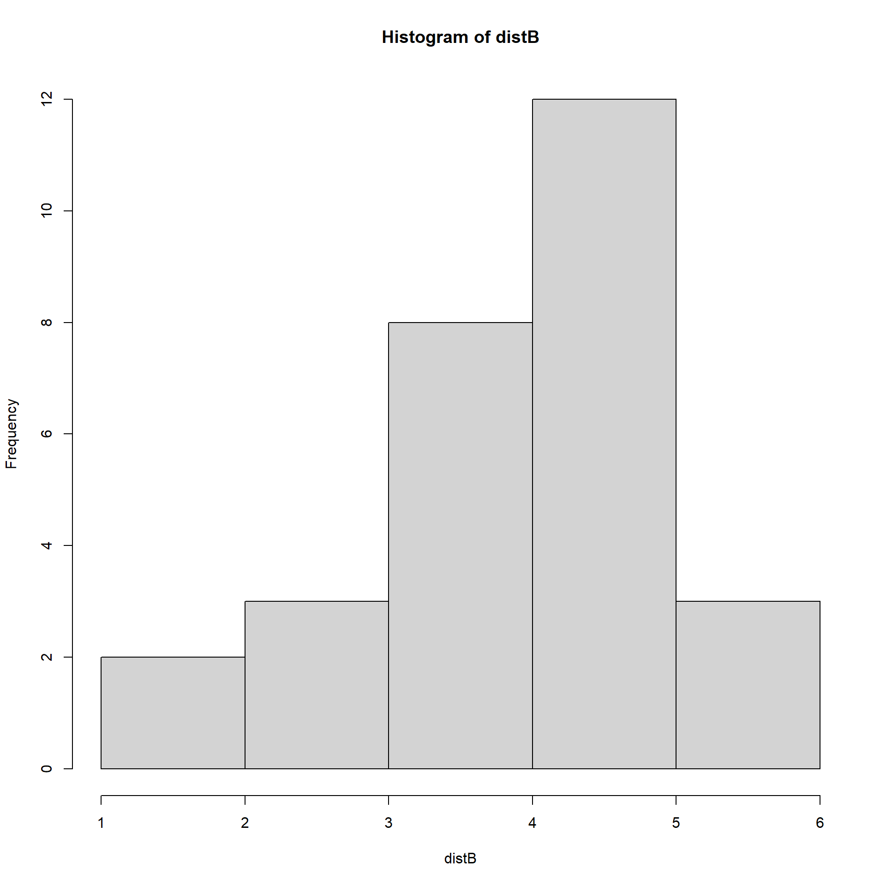
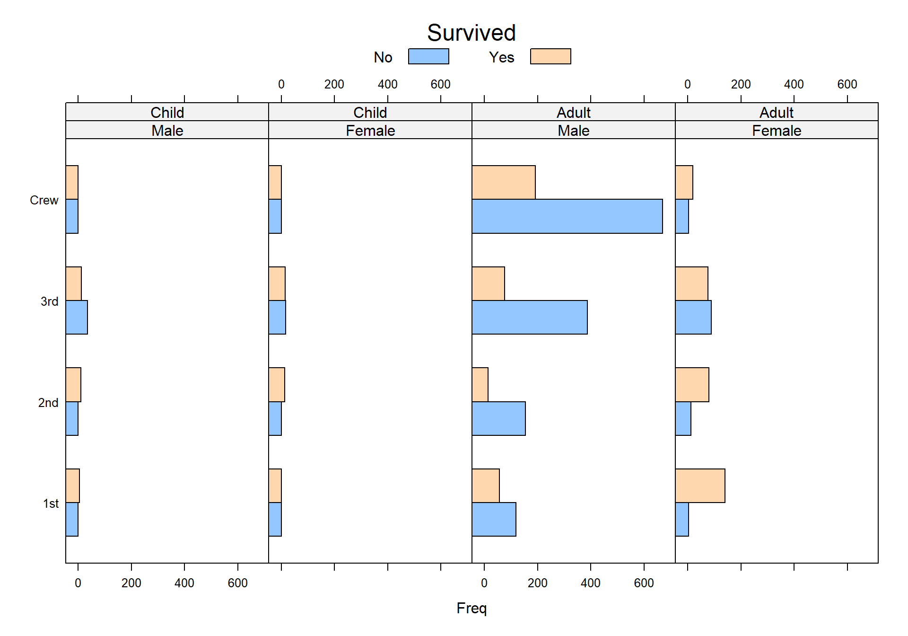
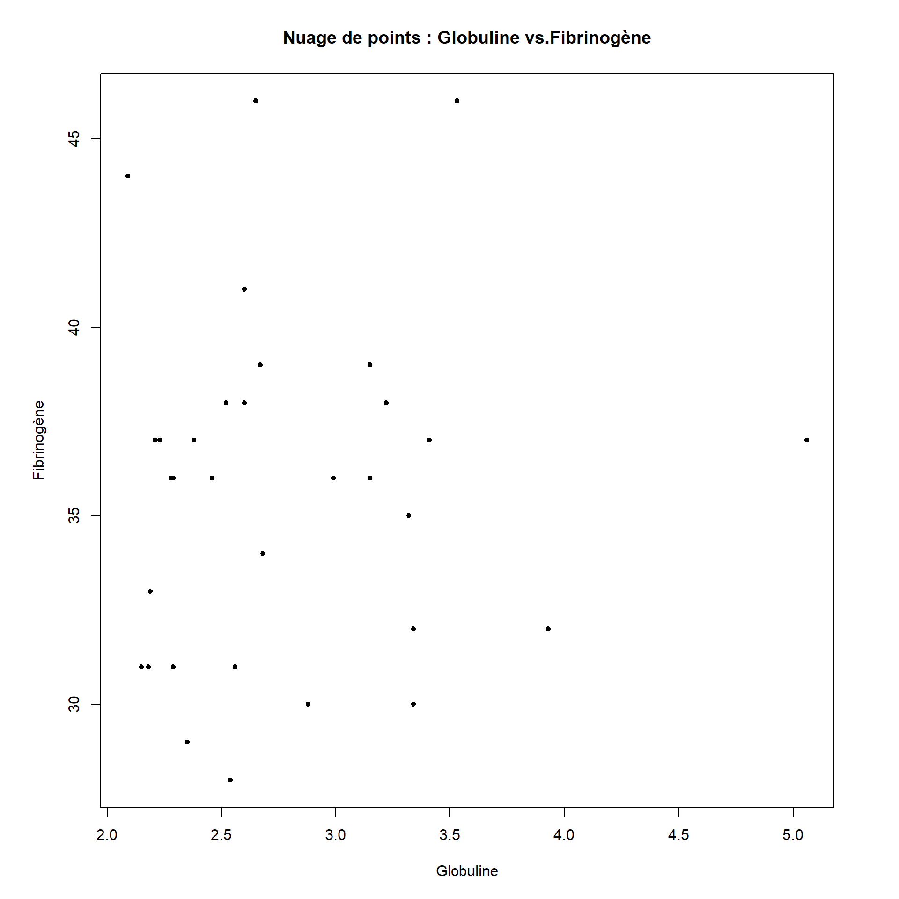

Travail pratique VID
TP #1
Introduction
Dans ce travail pratique, nous allons explorer l’utilisation du logiciel R pour l’analyse de données. À travers cet exercice, nous renforcerons nos compétences en analyse exploratoire et en visualisation de données, tout en apprenant à rédiger des rapports d’analyse clairs et concis.
Guidés par des ressources pédagogiques disponibles, nous aurons l’opportunité de manipuler différents jeux de données et d’acquérir une meilleure compréhension des techniques statistiques utilisées en science des données.
Q1A:
Voici le code permettant de charger les donnée des notes:
Q1B:
Voici le code permettant d’afficher les boxplots:
par(mfrow=c(1,2), pty="s")
boxplot(Note ~ Classe, data = examen, main = "Notes de l'examen de mathématiques", xlab = "Classe", ylab = "Note", col = "orange")
abline(h = 4, col = "black", lty = 2)
Q1C:
Il existe en effet une différence significative entre la classe ‘F’ et la classe ‘A’. L’intervalle de travail de la classe ‘F’ est beaucoup plus grand [1 ; 5.5] alors que la classe ‘A’ [2.5 ; 6] réussi un peu mieux son examen de mathématique. En conséquence la moyenne (donc la position) est plus élevée dans la classe ‘A’. Quant à la classe ‘B’ elle se trouve entre les deux autres avec une moyenne très proche de la classe ‘A’.
Q1D:
Oui en effet, nous pouvons utiliser un indicateur de dispersion tel que l’écart-type ou l’IQR avec la fonction IQR(). Nous pouvons voir que l’IQR est plus élevé pour la classe ‘F’. Attention il convient de garder en tête que nous avons ôté les valeur NA donc les jeux de données sont potentiellement non équilibrés.
[1] 1[1] 1.05[1] 1.5Q1E:
Les calculs des écarts-types selon le fonction sd et by. Oui il existe une différence entre les classes ‘F’ et les deux autres classes ‘A’ et ‘B’ comme décrit plus haut.
[1] "STD A: 0.848528137423857"[1] "STD B: 1.00166528008778"[1] "STD F: 1.30986004341431"[1] "STD A: 1.21701769727137" "STD A: 0.848528137423857"[1] "STD B: 1.21287144531362" "STD B: 1.00166528008778"[1] "STD F: 0.930970123098264" "STD F: 1.30986004341431" Q1F.
L’écart-type est un indicateur robuste de la dispersion des valeurs d’un dataset. Il convient comme déjà, dit de tenir compte du nombre d’observations entre les différentes classes.
Q1G:
Nous commençons par sélectionner la feature ‘Note’ de la classe ‘A’. Ensuite nous appelons la fonction summary().
Min. 1st Qu. Median Mean 3rd Qu. Max. NA's
2.50 3.60 4.10 4.08 4.60 5.90 3 Q1H:
Nous utilisons la fonction skewness. Elle nous informe
1. de la magnitude de l’asymétrie et
2. du sens de celle-ci
Nous obtenons un -0.588 ce qui nous donne une asymétrie négative de magnitude moyenne. L’histogramme nous le confirme.
library(e1071)
distB <- examen$Note[examen$Classe == 'B']
distB <- na.omit(distB)
print(skewness(distB))[1] -0.5881639
$breaks
[1] 1 2 3 4 5 6
$counts
[1] 2 3 8 12 3
$density
[1] 0.07142857 0.10714286 0.28571429 0.42857143 0.10714286
$mids
[1] 1.5 2.5 3.5 4.5 5.5
$xname
[1] "distB"
$equidist
[1] TRUE
attr(,"class")
[1] "histogram"Q1I: Les boîtes à moustaches mettent en valeur la dispersion des données IQR. Quant au diagramme de densité, il montre de manière plus claire le type de distribution et le mode. Le deux diagrammes sont intéressants lors de l’analyse. Néanmoins le diagramme en densité semble plus approprié pour l’exemple des notes.
Q2A:
Number of cases in table: 2201
Number of factors: 4
Test for independence of all factors:
Chisq = 1637.4, df = 25, p-value = 0
Chi-squared approximation may be incorrectQ2B:
Voici le code permettant d’afficher le graphique selon l’exemple: Nous avons donc dans la ‘formule’ les variable Class et Freq qui doivent être utilisées. Ensuite les variables conditionnelles Sex et Age qui vont permettre d’ajouter des en-têtes.
Si l’argument Stack est = True alors nous obtenons plus qu’un seul histogramme par classe et boîte. Avec ce paramètre la comparaison n’est plus aussi aisée. Il peut être utilisé dans un cas ou la différence entre les valeurs à comparer n’est pas significative.
titanic.bar <- barchart(Class~Freq | Sex * Age, data=as.data.frame(Titanic),
groups=Survived, stack=F, layout=c(4,1),
auto.key=list(title="Survived", columns=2))
print(titanic.bar)
Q2C: 1. Oui il existe une différence significative entre les genre dans la catégorie Adulte. En effet les enfants ne présentent pas de différence notable entre les survivants vs décédés fille et garçons.
Oui il y a une différence significative entre les adultes et les enfants. En premier lieu il est à noter qu’il y avait plus d’individus adultes que enfants à bord. Ensuite, il y a eu beaucoup plus de décès chez les adultes que chez les enfants.
Oui il y a eu (chez les adultes) proportionnellement à la représentation de l’échantillon de la classe, plus de décès chez chez l’équipage. Ensuite nous observons une diminution du nombre de morts en avançant vers les classes plus aisées.
Interprétation: Les 3ème classes se situaient en fond de bâtiment et les cloisons ont été fermées afin de confiner la montée des eaux. En outre, leur probabilités de survie ont été diminuées.
Source: https://abc13.com/titanic-anniversary-immigration-world-history/1874040/#:~:text=Approximately%201%2C317%20passengers%20died%20when,their%20area%20of%20the%20Titanic.
Q2D: On pourrait envisager la présentation d’un histogramme par combinaison de genre et de sexe (4) avec deux bar-graphes par classes afin de comparer les survivants comme montré dans le graphe précédent.
Q3A:
library(HSAUR2)
library(tools)
par(pty="s")
plot(plasma$fibrinogen, plasma$globulin,
pch = 20, main = "Nuage de points : Globuline vs.Fibrinogène",
xlab = "Globuline",
ylab = "Fibrinogène",
aspect.ratio = 1)
Q3B:
Nous pouvons connaître la corrélation avec le code suivant: Nous obtenons 0.08 nous avons donc aucune linéarité entre les deux variables.
Q3C:
plasma.glm<-glm(ESR~fibrinogen+globulin, data=plasma, family=binomial)
prob<-predict(plasma.glm, type="response")
par(pty="s")
plot(globulin~fibrinogen, data=plasma, xlim=c(2,6), ylim=c(25,55), pch=20,
xlab="fibrinogène", ylab="globuline", main="")
symbols(plasma$fibrinogen, plasma$globulin, circles=prob, add=TRUE, fg="red",
bg="orange")
Nous pouvons dire que plus les variables ont des valeurs élevées (fibrinogène et globuline) plus la probabilité semble élevée.
Q4B:
Nous pouvons calculer les corrélations avec le code suivant: Nous constatons que toutes les valeurs sont très similaires bien que le dataset soit très différent.
data(anscombe)
correlation_x1_y1 <- cor(anscombe$x1, anscombe$y1)
correlation_x2_y2 <- cor(anscombe$x2, anscombe$y2)
correlation_x3_y3 <- cor(anscombe$x1, anscombe$y3)
correlation_x4_y4 <- cor(anscombe$x4, anscombe$y4)
print(correlation_x1_y1)[1] 0.8164205[1] 0.8162365[1] 0.8162867[1] 0.8165214Q4C:
Q4D:

Q4E:

Q4F:
Nous pourrions envisager d’ajouter la ‘fit-line’ ou droite de régression afin de visualiser aussi où se trouvent les données par rapport à une régression.
library(ggplot2)
library(GGally)
library(GGally)
theme_set(theme_bw())
ggpairs(anscombe.1,
lower=list(continuous=wrap("points", alpha=0.8, colour="#FF8247")),
aspect="iso",
title="Séries de Francis Anscombe")
Q4G:
library(ggplot2)
library(GGally)
par(mfrow=c(2, 2),pty="s")
plot(anscombe$x1, anscombe$y1, pch=21, bg="orange", xlab="", ylab="", xlim=c(4, 20),
ylim=c(4, 14))
plot(anscombe$x1, anscombe$y2, pch=21, bg="orange", xlab="", ylab="", xlim=c(4, 20),
ylim=c(4, 14))
plot(anscombe$x1, anscombe$y3, pch=21, bg="orange", xlab="", ylab="", xlim=c(4, 20),
ylim=c(4, 14))
plot(anscombe$x4, anscombe$y4, pch=21, bg="orange", xlab="", ylab="", xlim=c(4, 20),
ylim=c(4, 14))
par(mfrow=c(1, 1))
legend(9.5, 9, "r = 0.82", bty="n")
Q4H:
Le premier graphe (corrplot.mixed) nous permet de visualiser les valeurs de corrélation ainsi qu’une représentation visuelle à l’aide de points. Et ceci, entre les paires de variable données.
Le deuxième graphe (network plot) nous permet d’uniquement comparer les corrélation de manière visuelle. Nous disposons uniquement du graphe et ses connexions avec les magnitudes de celles-ci. Un graphe intéressant si nous désirons mettre en évidence uniquement les relations entre les variables sans surcharger la visualisation de valeurs.
Le troisième graphe en matrice (scatter plot matrix) nous permet de voir à la fois la valeur du R^2 mais aussi le scatter plot de la combinaison de variables. la diagonale nous informe de la distribution des données. Nous devons regarder à quelle cellule correspond chaque paire valeur-scatter-plot ce qui peut être mal adapté pour une compréhension instantanée des données.
Nous pourrions souhaiter afficher la corrélation directement dans la cellule et afficher un deuxième scatter-plot avec la même combinaison de variable mais de manière à inverser les abscisses et ordonnées.
Le dernier graphe en matrice de 4 sous-graphes est intéressant par sa clarté. En effet, en affichant le R^2 au centre il est facilement compréhensible que cette information concerne tous les graphes.
Q5A:
| Name | penguins |
| Number of rows | 344 |
| Number of columns | 8 |
| _______________________ | |
| Column type frequency: | |
| factor | 3 |
| numeric | 5 |
| ________________________ | |
| Group variables | None |
Variable type: factor
| skim_variable | n_missing | complete_rate | ordered | n_unique | top_counts |
|---|---|---|---|---|---|
| species | 0 | 1.00 | FALSE | 3 | Ade: 152, Gen: 124, Chi: 68 |
| island | 0 | 1.00 | FALSE | 3 | Bis: 168, Dre: 124, Tor: 52 |
| sex | 11 | 0.97 | FALSE | 2 | mal: 168, fem: 165 |
Variable type: numeric
| skim_variable | n_missing | complete_rate | mean | sd | p0 | p25 | p50 | p75 | p100 | hist |
|---|---|---|---|---|---|---|---|---|---|---|
| bill_length_mm | 2 | 0.99 | 43.92 | 5.46 | 32.1 | 39.23 | 44.45 | 48.5 | 59.6 | ▃▇▇▆▁ |
| bill_depth_mm | 2 | 0.99 | 17.15 | 1.97 | 13.1 | 15.60 | 17.30 | 18.7 | 21.5 | ▅▅▇▇▂ |
| flipper_length_mm | 2 | 0.99 | 200.92 | 14.06 | 172.0 | 190.00 | 197.00 | 213.0 | 231.0 | ▂▇▃▅▂ |
| body_mass_g | 2 | 0.99 | 4201.75 | 801.95 | 2700.0 | 3550.00 | 4050.00 | 4750.0 | 6300.0 | ▃▇▆▃▂ |
| year | 0 | 1.00 | 2008.03 | 0.82 | 2007.0 | 2007.00 | 2008.00 | 2009.0 | 2009.0 | ▇▁▇▁▇ |
Q5B:
Nous nous apercevons que la variable ‘sex’ a 11 valeurs manquantes.
Q5C:
L’espèce la plus représentée comme nous indique le code ci-dessous est l’Adélie.
Q5D:
En calculant le coefficient de Pearson sans les NA nous obtenons un 65.6 % de corrélation entre ces deux paramètres. Ce n’est pas significatif donc nous pouvons affirmer que le corrélation est faible.
library(skimr)
library(ggplot2)
library(palmerpenguins)
ggplot(data = penguins, aes(x = flipper_length_mm, y = bill_length_mm)) +
geom_point(aes(color = species, shape = species), size = 3, alpha = 0.8) +
scale_color_manual(values = c("darkorange","purple","cyan4")) +
labs(title = "Taille des manchots, Palmer Station LTER",
subtitle = "Longueur des nageoires et longueur du bec chez les manchots Adelie, Chinstrap et de Gentoo",)
Q5E:
Nous observons un Chinstrap avec une longueur de nageoire anormalement longue (180mm) et un bec de ~57mm). Le reste des donnée semble relativement régulier.
Q5F:
Nous pourrions envisager de discriminer le Chinstrap en prenant par exemple la valeur de 205mm pour la longueur des nageoires.
Q5G:
Voir Q5D:
Q5H:
En modifiant le paramètre shape nous pouvons visualiser les iles avec la forme.
Les manchots de Gentoo vivent exclusivement sur Biscoe.
library(skimr)
library(ggplot2)
library(palmerpenguins)
ggplot(data = penguins, aes(x = flipper_length_mm, y = bill_length_mm)) +
geom_point(aes(color = species, shape = island), size = 3, alpha = 0.8) +
scale_color_manual(values = c("darkorange","purple","cyan4")) +
labs(title = "Taille des manchots, Palmer Station LTER",
subtitle = "Longueur des nageoires et longueur du bec chez les manchots Adelie, Chinstrap et de Gentoo",)
Q5I:
ggplot(penguins, aes(x = island, y = species, color = species)) +
geom_jitter(size = 3) +
scale_color_manual(values = c("darkorange","purple","cyan4")) +
labs(x = "Iles",
y = "Espèce de manchots",
color = "Espèce de manchots")
Q5J:
library(ggplot2)
library(palmerpenguins)
ggplot(data = penguins, aes(x = flipper_length_mm, y = bill_length_mm)) +
geom_point(aes(color = sex), size = 5, alpha = 0.5) +
scale_color_manual(values = c("red", "blue", "grey")) +
labs(title = "Taille des manchots, Palmer Station LTER",
x = "Longueur des nageoires (mm)",
y = "Longueur du bec (mm)",
color = "Espèce",
shape = "Sexe") +
facet_wrap(~species, ncol = 3)
Q6A:
Q6B:
library(ggplot2)
library(treemapify)
library(camcorder)
grant <- read.csv("isc_grants.csv")
pal <- c("#002870","#005A87","#078788","#A5A63C","#DE9704","#C45D27","#AD3518","#990C00")
ggplot(grant, aes(area=funded, fill=factor(year), subgroup=as.factor(year))) +
geom_treemap() +
geom_treemap_text(aes(label=paste0(title, "\n", proposed_by, "\n\n", scales::dollar(funded))), reflow=TRUE, grow=TRUE, color="white") +
geom_treemap_subgroup_text(aes(label=year), color="white", grow=TRUE, alpha=0.25) +
scale_fill_manual(values=pal) +
labs(
title="Bourses accordées selon les années",
caption="Source: Comité de pilotage du consortium R",
fill="Year"
) +
theme_void()+
theme(
legend.position="none",
plot.background=element_rect(fill="grey99", color=NA),
plot.title=element_text(size=30, face="bold", color="#0D2765", margin=margin(0, 0, 5, 0)),
plot.caption=element_text(color="#0D2765"),
plot.margin=margin(10, 10, 10, 10)
)
Conclusion
En conclusion, cette expérience m’a permis de mettre en pratique plusieurs aspects fondamentaux de l’analyse de données et de la visualisation. À travers la manipulation des jeux de données, j’ai pu développer mes compétences avec les outils tels que R et ses bibliothèques.
J’ai pu apprendre à créer des visualisations intéressantes, ce projet m’a permis d’acquérir des connaiisances de base dans la manipulation des données avec R dans le domaine de la science des données.
J’ai rencontré plusieurs problèmes avec le logiciel Rstudio qui ont souvent été résolus en redémarrant celui-ci. De plus ne nombreux problèmes avec certains packages en rapport avec des versions lors d’appel de fonctions sans vraiment comprendre d’où venait le problème..
Ce cours m’a permis de prendre conscience de l’importance de la présentation des données et de la clarté dans la communication des résultats, des compétences indispensables dans ma future carrière en science des données.